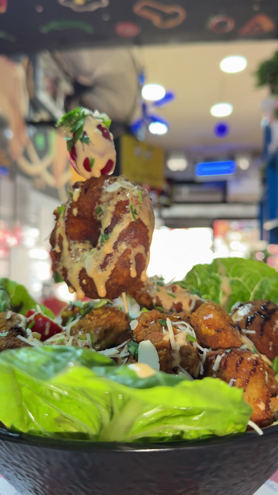

1. Notre Vision : Redéfinir la Restauration Rapide à Hammamet
Fondé avec la volonté inébranlable d'élever les standards du fast food en Tunisie, Fratello Fast Food est bien plus qu'une simple enseigne de restauration rapide. Notre nom — inspiré du mot italien signifiant « frère » — incarne nos valeurs fondamentales : la fraternité, la générosité des portions, le partage culinaire et l'accueil chaleureux qui caractérisent la culture méditerranéenne.
Implanté stratégiquement sur la Route Nationale 1 à Baraket Sahel, à la croisée des chemins entre Hammamet Centre, Hammamet Sud et la station touristique de Yasmine Hammamet, Fratello s'est rapidement imposé comme le point de ralliement incontournable pour les étudiants, les familles locales, les professionnels et les voyageurs en quête d'un repas réconfortant, rapide et d'une fraîcheur irréprochable.
« Pour nous, un fast food ne doit jamais sacrifier la qualité au profit de la rapidité. Chaque bouchée doit refléter la passion du métier, de la pâte fermentée patiemment jusqu'à la dernière goutte de sauce secrète. »
2. Les Piliers de Notre Savoir-Faire Culinaire
Ce qui distingue Fratello Fast Food des chaînes industrielles repose sur quatre principes non négociables appliqués au quotidien dans nos cuisines :
- La Pâte à Pizza Fermentée 48 Heures : Nos pizzas ne sont jamais réalisées avec des pâtons surgelés. Notre pâte artisanale subit un processus de fermentation lente et de maturation au froid pendant 48 heures minimum. Ce procédé naturel confère à nos pizzas une texture aérée, des bords croustillants et alvéolés, et une digestibilité incomparable lors de la cuisson à haute température.
- L'Escalope Panée Maison Minute : C'est la signature indétrônable de notre maison. Nos filets d'escalope de poulet frais sont assaisonnés avec notre mélange secret d'épices douces, panés à la main à la commande, puis saisis immédiatement pour offrir une croûte ultra-dorée et une chair tendre et juteuse.
- Des Sauces Artisanales Cuisinées : Notre célèbre sauce secrète au fromage fondant, notre crème d'ail parfumée et notre harissa tunisienne préparée dans les règles de l'art subliment nos tacos, makloubs, paninis et sandwichs spéciaux.
- Sélection Rigoureuse des Produits Frais : Fromages fondants de qualité supérieure, légumes croquants livrés quotidiennement par les maraîchers de la région du Cap Bon, et fruits de mer frais (crevettes, thon méditerranéen) pour nos pizzas et ojjas royales.
Un Service Continu Nocturne 7j/7
Parce que les envies gourmandes ne connaissent pas d'heure, notre équipe vous accueille chaque jour sans interruption de 10h00 du matin à 02h00 tard dans la nuit. Que ce soit pour un déjeuner express, une pause dîner entre amis ou un encas nocturne après une sortie à Hammamet, nos fourneaux restent allumés pour vous servir chaud et minute.
3. Une Ancrage Local au Cœur du Cap Bon
Hammamet est mondialement réputée pour sa douceur de vivre, ses plages azurées et son patrimoine historique. Chez Fratello, nous sommes fiers de contribuer à la vitalité gastronomique de cette ville en offrant une street food cosmopolite qui marie harmonieusement les influences tunisiennes, italiennes et françaises.
Nous assurons une couverture complète de livraison : que vous résidiez dans le centre historique de Hammamet, à Baraket Sahel, ou que vous séjourniez dans les hôtels balnéaires de Yasmine Hammamet, notre brigade de livreurs vous achemine vos commandes directement à la réception de votre hôtel ou à votre porte avec le sourire.
4. Notre Équipe & Nos Engagements d'Hygiène
Dans notre cuisine ouverte, la transparence est totale. Nos clients peuvent observer en direct le dressage de leurs tacos, le travail minutieux de la pâte à pizza et le spectacle des grillades sur feu vif. Le respect rigoureux des normes sanitaires, la propreté irréprochable des postes de travail et le port d'équipements de protection font partie intégrante de notre routine quotidienne.
Nous remercions chaleureusement notre communauté fidèle de clients qui, par leurs centaines de retours positifs et leurs partages quotidiens sur les réseaux sociaux, nous inspirent à viser l'excellence à chaque commande.